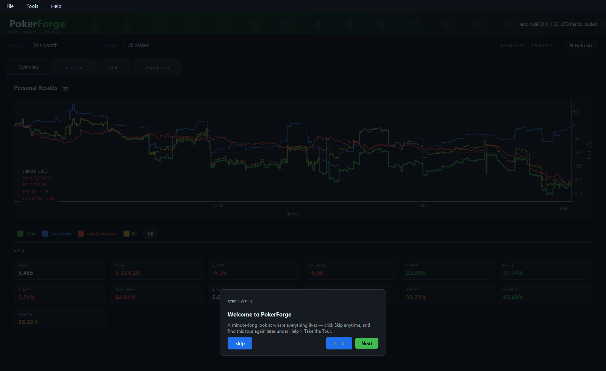
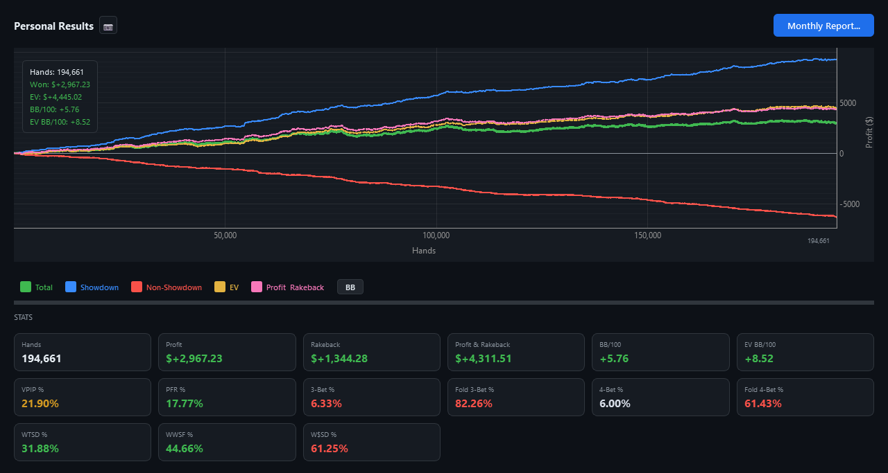
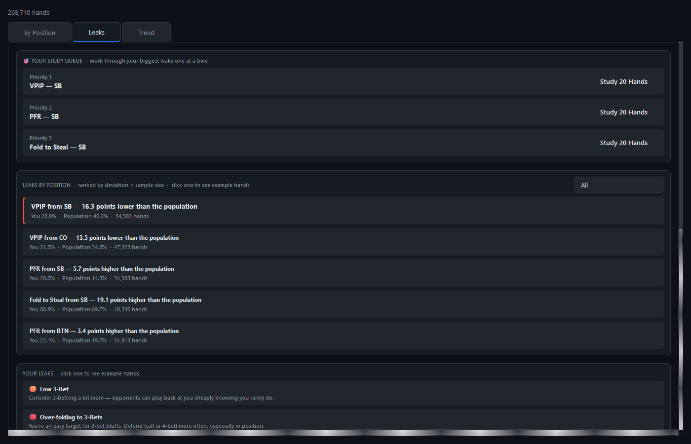
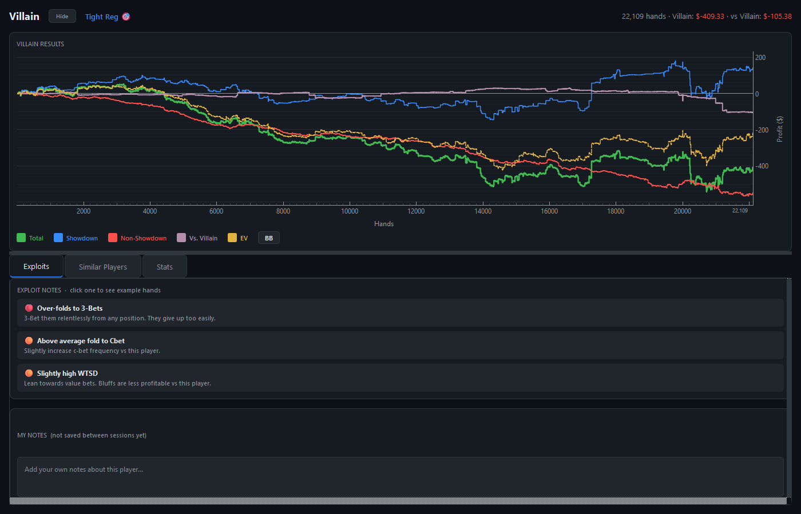
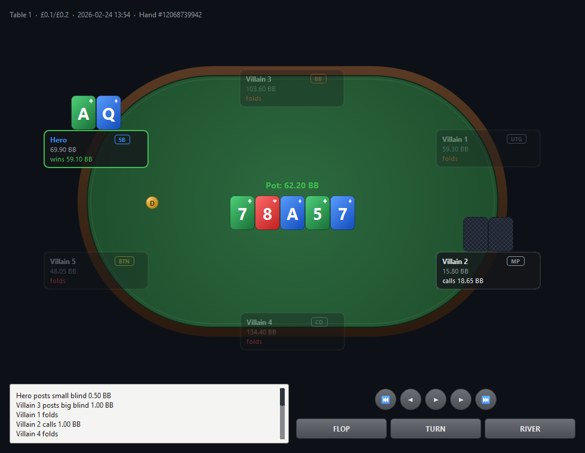

Import your own hands, track every session, and let PokerForge tell you exactly what to fix next — running entirely on your computer. Nothing you play is ever uploaded.

Reads hand histories from
Cash games and tournaments alike — every parser verified against real exports.
Not a wall of numbers you have to interpret yourself — a tracker that does the interpreting, then shows you the hands that prove it.
Every hand and every stat stays on your machine. No cloud sync, no server, no account required to use it.
PokerStars, GGPoker, Winning Network / ACR and iPoker hands — cash and tournaments, parsed natively.
Ranks your biggest leaks against the population you actually play, then builds a Study Queue around them.
Cash and tournaments, rakeback, session history, villain profiles and a full hand replayer — one app.
A profit graph that separates showdown from non-showdown winnings and tracks your EV-adjusted line — plus something most trackers miss entirely: your actual rakeback, folded into its own curve.

Every stat is measured against the population you actually play against — not a generic baseline. The worst gaps become a ranked Study Queue, and every one of them clicks through to the hands that prove it.

Every regular you've played gets a real profile — your results against them, their tendencies, and plain-English exploits you can actually act on, each backed by example hands.

Jump straight from a stat, a leak or a session into the hand itself — full table, every position, every action, at the speed you want to read it.

Free to download. About five minutes to your first import.
No. PokerForge parses and stores everything in a local database on your own computer. There's no account, no cloud sync and no analytics — the app makes no network calls unless you explicitly ask it to, such as checking for updates. See the Privacy Policy for the full detail.
PokerStars, GGPoker, Winning Network (including Americas Cardroom) and iPoker — cash games and tournaments. Note that GGPoker and Winning Network anonymise opponents in their own hand-history exports, so hands from those rooms feed your own stats rather than building opponent profiles.
For most cash and tournament grinders, yes — it covers the same core workflow of importing hands, tracking results, studying leaks and profiling opponents, with an actively maintained set of parsers and a leak-finding engine built in from the start rather than bolted on.
PokerForge is free to download and use today while it's in beta. If you'd like to be told when that changes, watch the GitHub repository — any pricing will be announced there first, and your imported hands always remain yours and stay on your own machine regardless.
Windows 10 and 11, as a standalone installer — no separate Python installation needed. Your database and settings live in your own user profile and are never touched by an app update.